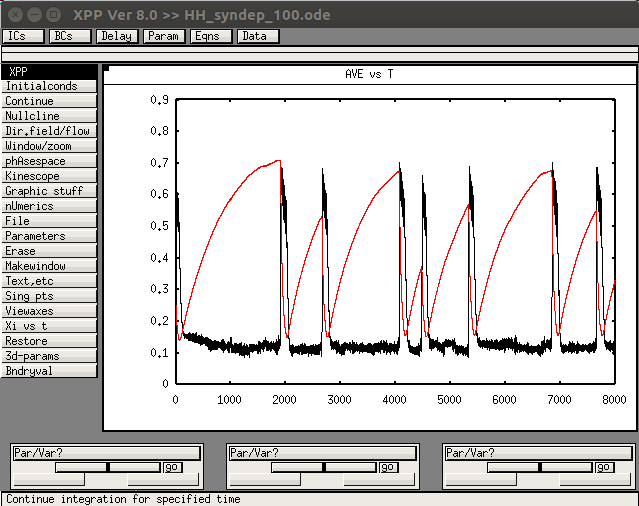
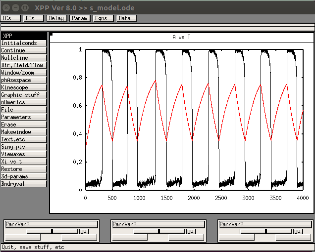

XPP Models for the paper:
Tabak J, Mascagni M, Bertram R (2010) Mechanism for the universal pattern of activity in developing neuronal networks.
J Neurophysiol 103:2208-21
[PubMed]
(including the network models) are available at the authors website:
https://www.math.fsu.edu/~bertram/software/neuron/JNP_10/
Example Figure 4A:
Open the model in xpp (in unix/linux type a command like):
xppaut H_syndep_100.ode
Click on Initalconds -> Go to create a graph like Fig 4A:

Example Figure 7A:
Open the model file in xpp (in unix/linux type a command like):
xppaut s_model.ode
Then click Initalconds -> Go
and you should see a graph like the below:
